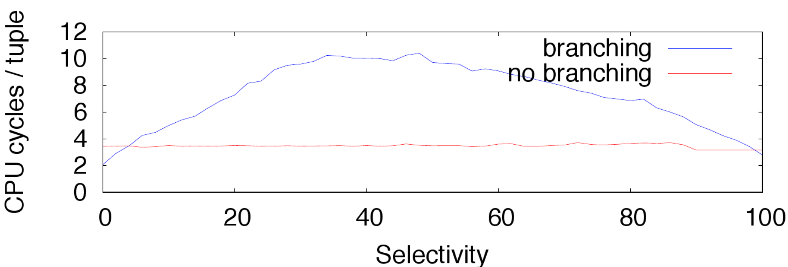
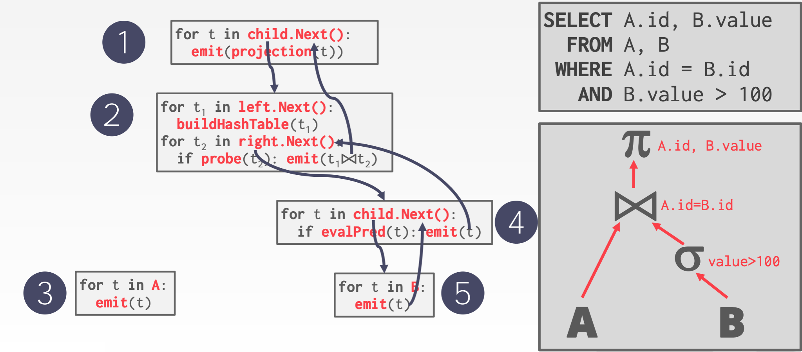
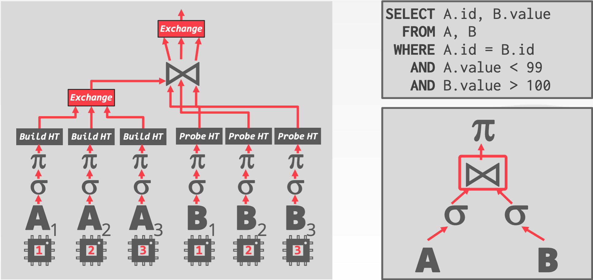
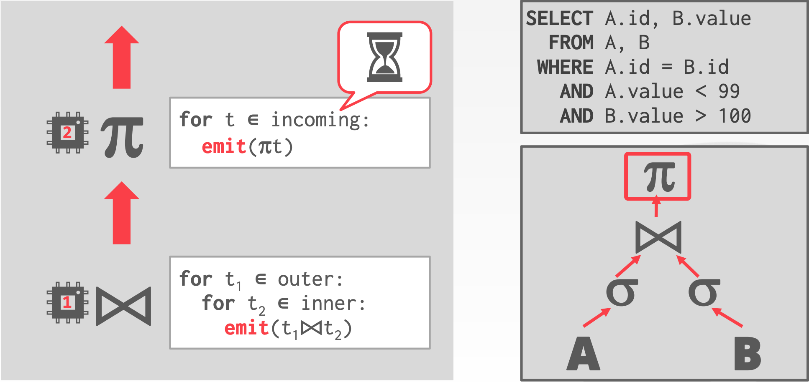

查询执行处理
算子执行
查询计划处理
应用逻辑执行（UDFs）
并行 JOIN 算法
向量化算子
查询编译
查询执行
一个查询计划由算子组成
一个算子实例是对数据的某个片段的一个算子的一次调用
一个任务是一个或者多个算子实例的执行序列
执行优化
我们现在就开始讨论提升数据集在内存中的 DBMS 查询执行性能的各种方法。
当我们移除磁盘之后，达成目标有其它的瓶颈。
优化目标
- 减少指令个数：使用更少的指令完成相同的工作。
- 减少每个指令的周期：在更少的周期内执行更多的 CPU 指令；这意味着减少因为内存加载而导致的缓存未命中和停顿。
- 并行化执行：使用多线程并行计算每个查询。
MonetDB/X100
对 OLAP 负载内存 DBMS 执行瓶颈的底层分析。展示DBMS如何针对现代CPU架构进行不正确的设计。
基于这些发现，他们提出了一个新的 DBMS 叫做 MonetDB/X100。
- 重命名为 Vectorwise 在 2010 年被 Action 收购。
- 品牌为Vector and Avalanche。
CPU 概览
CPU 将指令组织为 pipeline 阶段。目标是通过屏蔽在单个周期内无法完成的指令的延迟来保持处理器的所有部分在每个周期都忙。
超标量 CPU 支持多个管道。在单个周期内如果指令是独立的，可以并行执行多个指令；Flynn的分类：SISD。
DBMS/CPU 问题
- 问题1：依赖，如果一个指令依赖另一个指令，则不能被立即推送到同一个 pipeline 上。
- 问题2：分支预测，CPU 超市预测程序的分支，并且将其指令填充到 pipeline 上；如果预测错误，它必须抛弃任前面的预测工作并冲洗管道。
分支预测错误
由于管道较长，CPU会推测性地执行分支。 这可能会隐藏相关指令之间的长时间停顿。
DBMS 中执行最多的分支是顺序扫描过程中的过滤操作，但这几乎无法正确预测。
SELECTION扫描
SELECT * FROM table WHERE key >= $(low) AND key <= $(high)
分支：
i = 0 for t in table: key = t.key if (key≥low) && (key≤high): copy(t, output[i]) i = i + 1
非分支：
i = 0 for t in table: copy(t, output[i]) key = t.key m = (key≥low ? 1 : 0) && (key≤high ? 1 : 0) i = i + m

过多的指令
DBMS 需要支持不同数据类型，所以必须在执行对这个值得任何操作之前，检查一个值的类型。
- 这通常实现为一个很大的 switch 语句。
- 还创建了更多分支，导致 CPU 很难来可靠地预测。
例如：Postgres 对 NUMBERIC 类型的加法。
int PGTYPESnumeric_add(numeric *var1, numeric *var2, numeric *result) { /* * Decide on the signs of the two variables what to do */ if (var1->sign == NUMERIC_POS) { if (var2->sign == NUMERIC_POS) { /* * Both are positive result = +(ABS(var1) + ABS(var2)) */ if (add_abs(var1, var2, result) != 0) return -1; result->sign = NUMERIC_POS; } else { /* * var1 is positive, var2 is negative Must compare absolute values */ switch (cmp_abs(var1, var2)) { case 0: /* ---------- * ABS(var1) == ABS(var2) * result = ZERO * ---------- */ zero_var(result); result->rscale = Max(var1->rscale, var2->rscale); result->dscale = Max(var1->dscale, var2->dscale); break; case 1: /* ---------- * ABS(var1) > ABS(var2) * result = +(ABS(var1) - ABS(var2)) * ---------- */ if (sub_abs(var1, var2, result) != 0) return -1; result->sign = NUMERIC_POS; break; case -1: /* ---------- * ABS(var1) < ABS(var2) * result = -(ABS(var2) - ABS(var1)) * ---------- */ if (sub_abs(var2, var1, result) != 0) return -1; result->sign = NUMERIC_NEG; break; ......
处理模型
DBMS 的处理模型定义系统执行一个查询计划如何执行：对不同负载的不同权衡。
- 方法1：迭代模型
- 方法2：物化模型
- 方法3：向量化/批量模型
迭代模型
每个查询计划算子实现一个 next 函数。
- 在每次调用的时候，算子返回单个原则或者一个 null 标识符。
- 算子实现一个循环对孩子调用 next 来查找它们的元组然后处理它们。
也叫做 Volcano 或者 Pipeline 模型。

这通常是几乎每个 DBMS 使用的模型。允许元组的 pipelining。
一些算子必须阻塞直到它们的孩子节点发送出所有的元组。
- Join，子查询，order by
使用这种方法，输出控制很容易。
物化模型
每个算子处理一次处理所有输入，每个发送所有的输出。
- 算子将其结果物化为单个结果。
- DBMS 可以将提示信息下推，避免扫描太多元组。
- 可以发送一个物化的行和单个行。
输出可以是整个元组或者列的子集。
对于 OLTP 负载更好，因为通常一个查询通常仅访问很小数量的元组。
- 更低的查询/协调开销。
- 更少的函数调用。
对于立即返回大量结果的 OLAP 查询不友好。
MonetDB/VoltDB/HYRISE
向量化模型
跟迭代模型很像，每个算子实现一个 next 函数。
每个算子发送一批元组而不是单个元组。
- 每个算子内部循环一次处理多个元组。
- 一批的大小可以根据硬件或者查询属性变化。
对于 OLAP 查询很友好，因为会大幅度减少每个算子的调用数量。
允许算子使用向量化指令(SIMD)来处理一批元组。
计划执行方向
- 自顶向下
从根节点开始，从其孩子节点上 pull 数据。
元组总是通过函数调用来传递。
- 自底向上
从叶子节点开始将数据 push 到父节点。
允许在 pipeline 中对缓存、寄存器更紧密的控制
我们后面会在 Hyper 和 Pelton ROF 中看到。
并行
查询间并行
多个查询同时进行提高整体性能。通过并发控制模式提供隔离的假象。
实现一个并发控制模式的难度，不会受到 DBMS 处理模型的显著影响。
查询内并行
通过并行执行单个查询来提升性能。
- 算子内（水平）
- 算子间（垂直）
这些技术并不是互斥的。每个关系算子都有并行化算法。
算子内
算子被分解为独立的示例来执行不同数据子集的相同函数。
DBMS 插入一个 exchange 算子到查询计划中合并孩子算子的结果。

算子间并行
算子是重叠的，以便将数据从一个阶段传递到下一个阶段，而不需要物化。
也叫做 pipelined 并行。
AFAIK，这种方法不被传统关系数据库广泛使用。
- 不是所有算子能够发送输出，直到其看到所有孩子的元组之后。
- 在流式处理系统中更加常见。

观察
提供适当数量的工作程序用于查询计划，取决于 CPU 的核心数、数据大小和算子的功能。
工作线程分配
- 每个核心一个工作线程。每个核心分配一个线程并绑定到那个核心上；设置亲和性。
- 每个核心多个工作线程。每个核或者每个连接一个工作线程池；单个核心阻塞之后，CPU 核心会被充分使用。
任务分配
- Push：一个中心化的分配器用来分配任务到工作线程，监视其处理；当工作线程通知分配器完成后，会被分配一个新的任务。
- Pull：工作线程从一个队列中获取下一个任务，处理，然后接着处理下一个。
部分思考
对于现代 CPU 而言，最容易的实现方式通常并不会产生最有效的执行策略。
我们我们会看到向量化/自底向上执行对于 OLAP 查询更加合适。